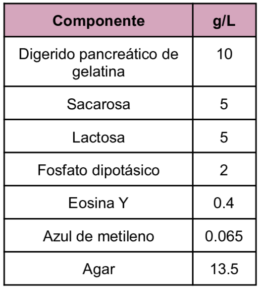
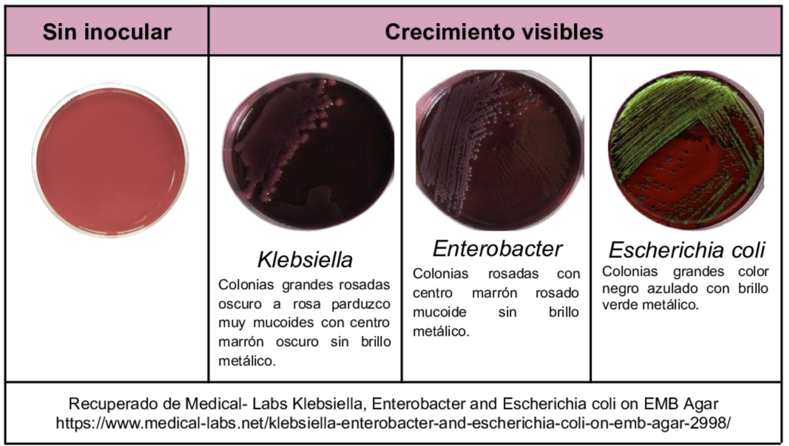

Medio de tipo selectivo y diferencial utilizado en el aislamiento y diferenciación de bacilos Gram negativos, dicho medio es utilizado para muestras de investigación clínica, alimentos y productos farmacéuticos. Dentro de su contenido se tiene eosina y azul de metileno indicadores que permiten diferenciar a los que utilizan la lactosa y/o sacarosa los cuales son los carbohidratos fermentables además los indicadores también actúan como inhibidores de bacterias Gram positivas.
Composición

pH a 25°C 7.2±0.2
Resultados Posibles
Los coliformes producen colonias negras azuladas mientras que colonias como
Salmonella y Shigella
son incoloras y en otro caso las colonias de
Escherichia coli
pueden exhibir un brillo verde metálico característico debido a la rápida fermentación de la lactosa.

Referencias
Tankeshwar, A. (2026) EMB Agar: Composition, Principle, and Colony Morphology. https://microbeonline.com/eosin-methylene-blue-emb-agar-composition-uses-colony-characteristics/
Romero, G. (2023) “Guía General de Medios de Cultivo Utilizados en la Industria” [Tesis de Licenciatura, Universidad Nacional Autónoma de México]. Repositorio DGBSDI. https://ru.dgb.unam.mx/server/api/core/bitstreams/30f99386-fb11-4b83-8931-b260bbcd5eef/content